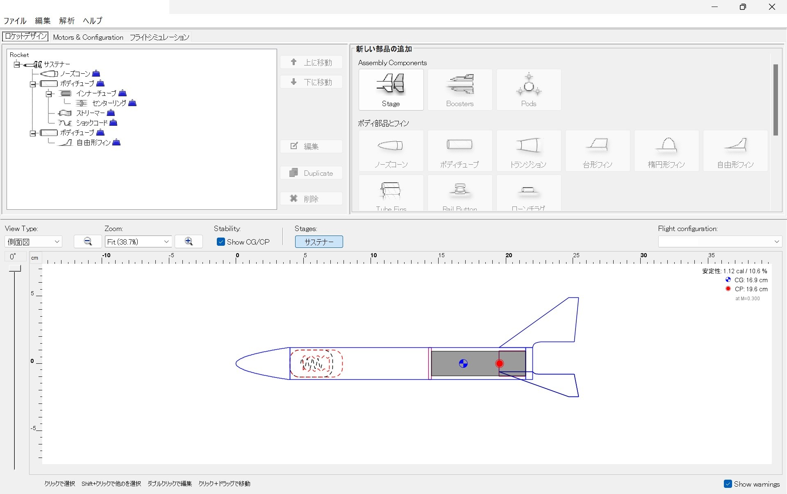
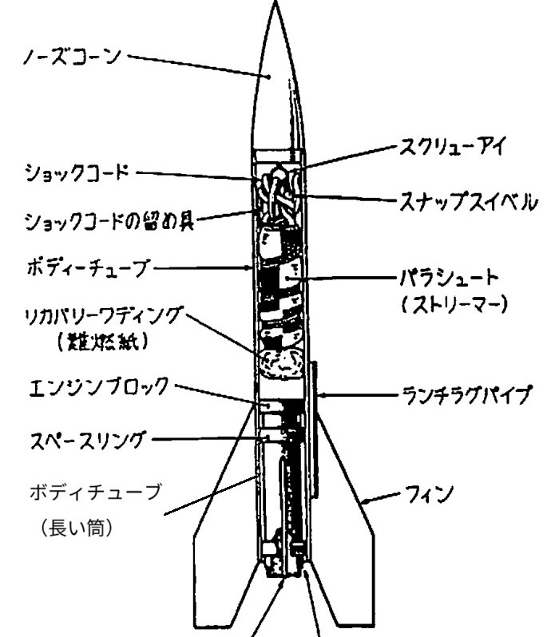
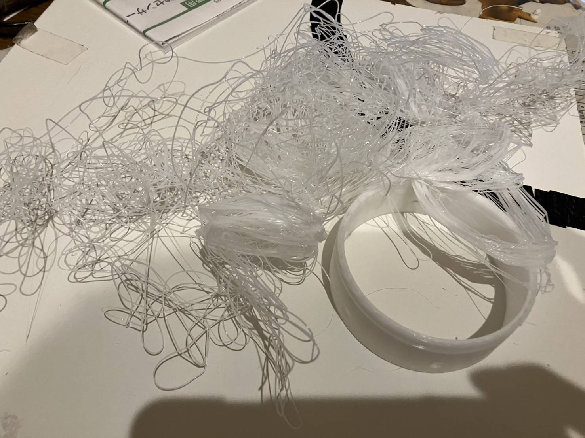
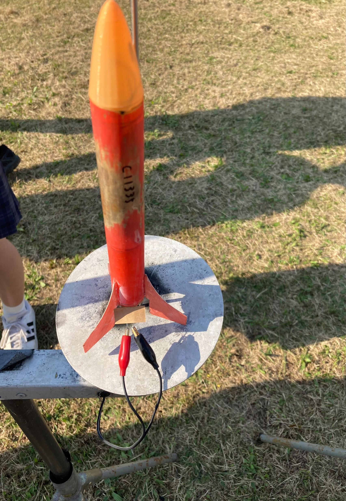
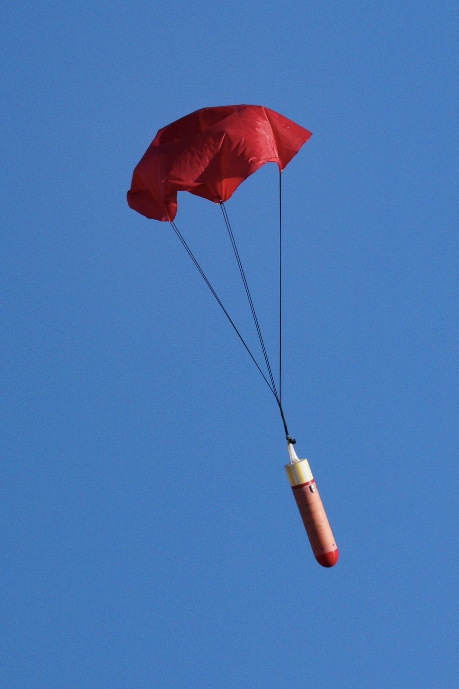
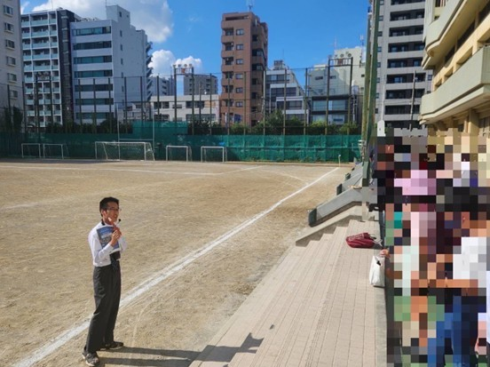

ロケット班とは
ロケット班の活動について
ロケットの製作の過程等から説明します
ロケットを設計する
モデルロケットを作りにあたっては、まずは設計から始まります。フリーソフトウェアのOpenRocketを主に使用し、重心、空気抵抗等を計算し、うまく飛ぶ機体を設計しています。
重心位置が適切でなければ、飛行姿勢が安定しないため、設計とあった機体の製作が重要です。
最も製作に当たって重要な部分です。
重心位置が適切でなければ、飛行姿勢が安定しないため、設計とあった機体の製作が重要です。
最も製作に当たって重要な部分です。

《写真》実際に全国大会に出た機体の設計図面
《写真》実際に全国大会に出た機体の設計図面
ロケットを作る
私たちは本格的な火薬を用いたモデルロケットを製作しています。大会や学校のイベントに向けて、ロケットを一から設計・制作します。
小型機体の大会でも、大型機体の大会でも優勝した、日本一の制作技術から極限まで極めた機体を設計し、究極の機体を作り上げます。
右もしくは下の図をご覧ください。モデルロケットにおける部品の名称です。（引用元：日本モデルロケット協会）
以下モデルロケットの部品それぞれにおいて、私たちがどのように工夫し作っているか説明します。
>歴史(参考)
小型機体の大会でも、大型機体の大会でも優勝した、日本一の制作技術から極限まで極めた機体を設計し、究極の機体を作り上げます。
右もしくは下の図をご覧ください。モデルロケットにおける部品の名称です。（引用元：日本モデルロケット協会）
以下モデルロケットの部品それぞれにおいて、私たちがどのように工夫し作っているか説明します。
>歴史(参考)

説明
ノーズコーンは空気抵抗を減らすためにオジーブ型とよばれる流線形の形状にしています。複雑な形状のでも量産できるように3Dプリンターで製造しています。印刷したノーズコーンを表面が鏡のようにピカピカになるまでやすりで削ります。そうすることによって、空気による摩擦を最小にして、ロケット全体のデザインを向上させます。
形状空気抵抗の少ない形状にするために、数式を利用して3Dデータを製作しています。
y = SQRT((R² - x²)) - (R - L)
R…ノーズコーンの直径 L…ノーズコーンの長さ
次の式にノーズコーンの直径と長さを代入するとオジーブ型の断面図が得られます。
注意点y = SQRT((R² - x²)) - (R - L)
R…ノーズコーンの直径 L…ノーズコーンの長さ
次の式にノーズコーンの直径と長さを代入するとオジーブ型の断面図が得られます。
3Dプリンターの印刷は失敗することもしばしばあります。失敗したらパラメーターを調整しながら印刷の精度を上げていきます。

《写真》印刷に失敗してしまった例
《写真》印刷に失敗してしまった例
ロケットのフレームとなるボディーは、機体の大部分を占めるため、軽量かつ強度が必要です。
ボディの作り方
①FRPの型に離型剤を塗ります
②ガラス繊維という専用の強化繊維にエ樹脂を塗り、型に巻きつけます
③硬化するまで一日ほど待って、完全に硬化したら型から取り外して完成です
苦労したところ②ガラス繊維という専用の強化繊維にエ樹脂を塗り、型に巻きつけます
③硬化するまで一日ほど待って、完全に硬化したら型から取り外して完成です
最初はコピー用紙でボディーチューブを作っていましたが、重量が重いため、競技用ロケットには不向きでした。そこで、FRPという軽くて強い新しい素材を採用しました。
しかし、FRPを使い始めた当初は、打ち上げの途中でボディーが折れてしまったり、逆噴射の熱で焦げて強度が弱くなったりするトラブルが発生しました。そのような失敗から、樹脂をできるだけ均等に塗ることで、強度を保ちつつ無駄な重量を削減するという工夫をしました。
また、FRPは製作に最低でも1日かかるため、ロケット全体の製作期間が長くなるという課題もありました。そこで、計画的にボディーを生産することで、効率的に製作を進められるよう工夫しました。
FRPとは？しかし、FRPを使い始めた当初は、打ち上げの途中でボディーが折れてしまったり、逆噴射の熱で焦げて強度が弱くなったりするトラブルが発生しました。そのような失敗から、樹脂をできるだけ均等に塗ることで、強度を保ちつつ無駄な重量を削減するという工夫をしました。
また、FRPは製作に最低でも1日かかるため、ロケット全体の製作期間が長くなるという課題もありました。そこで、計画的にボディーを生産することで、効率的に製作を進められるよう工夫しました。
FRPとは、Fiber Reinforced Plasticの略称で、日本語では繊維強化プラスチックと呼ばれます。FRPとはその名の通り繊維によって強化されたプラスチックのことです。比強度(引張強度を密度で割ったもの。強度÷重さ)で比較すると、鉄やアルミニウムより優れた耐久性を持っています。FRPは軽量で高強度な構造を求められる分野で使われます。
説明
ロケットの姿勢を安定させるため、適切な形状を設計します
作り方①バルサ材にフィンの形をケガキする
②線にそってバルサ材を切ります
③切り出したバルサ材にガラス繊維をエポキシ樹脂ではり、FRP加工をします
フラッターについて②線にそってバルサ材を切ります
③切り出したバルサ材にガラス繊維をエポキシ樹脂ではり、FRP加工をします
ロケットが高速で飛行すると、フィンには強い空気の力がかかります。フィンに十分な強度がないと、空気抵抗によってフィンが曲がり、激しく振動する現象が発生します。これをフラッターといいます。フラッターがおこるとロケットの高度が大幅に下がってしまうので、フィンには打ち上げに耐えられる十分な強度が求められます。僕たちは実際にバルサ材を売っている店舗へ行き、自分たちの手で軽くて強度の高いバルサ材を選ぶようにしています。

《写真》この機体の下についている、翼のようなものがフィン
《写真》この機体の下についている、翼のようなものがフィン
作り方
①市販のビニールごみ袋を用意します。
②ごみ袋綺麗な円形になるように切り出します。
③穴開けパンチを使い、間隔が均等になるように穴を12個開けます。
④釣り糸を穴と同じ本数切り(長さはパラシュートの直径と同じ)、穴に結びます
⑤結び目がほどけないように上からテープで留めます。
⑥12本の糸の先端を結んで一つにまとめます。
⑦ショックコード(ゴムひもなど、機体とパラシュートをつなげるため)を⑥の糸に結びます。
組み立て②ごみ袋綺麗な円形になるように切り出します。
③穴開けパンチを使い、間隔が均等になるように穴を12個開けます。
④釣り糸を穴と同じ本数切り(長さはパラシュートの直径と同じ)、穴に結びます
⑤結び目がほどけないように上からテープで留めます。
⑥12本の糸の先端を結んで一つにまとめます。
⑦ショックコード(ゴムひもなど、機体とパラシュートをつなげるため)を⑥の糸に結びます。
➀ケプラー糸の先端をノーズコーン、もう一方の端をノーズコーンに瞬間接着剤で仮止めし、上からテープで固定します。
②エンジンマウントをボディーに差し込み、エポキシ接着剤でボディーの内面と接着します。
③フィンをボディーの側面に瞬間接着剤で接着します。このとき、ロケットを真上から見たときに、フィンが均等についていることを確認します。フィンの取り付けが不正確だと、飛行中にロケットが回転しやすくなり、空気抵抗が増加してしまいます。
④使用済みのエンジンを装填した状態で重心を図ります。
⑤④で測定した重心位置に、パラシュートのショックコードを接着剤で固定します。パラシュートを重心位置に取り付けることで、ロケットの降下時に機体が横向きになり、横風に流されにくくなり、落下時間を延ばすことができます。
※例外的に小型機体の高度用の機体では、パラシュートでは重たいため、パラシュートではなく、スズランテープを切ったような長方形の形のストリーマーという回収装置を取り付けます。
②エンジンマウントをボディーに差し込み、エポキシ接着剤でボディーの内面と接着します。
③フィンをボディーの側面に瞬間接着剤で接着します。このとき、ロケットを真上から見たときに、フィンが均等についていることを確認します。フィンの取り付けが不正確だと、飛行中にロケットが回転しやすくなり、空気抵抗が増加してしまいます。
④使用済みのエンジンを装填した状態で重心を図ります。
⑤④で測定した重心位置に、パラシュートのショックコードを接着剤で固定します。パラシュートを重心位置に取り付けることで、ロケットの降下時に機体が横向きになり、横風に流されにくくなり、落下時間を延ばすことができます。
※例外的に小型機体の高度用の機体では、パラシュートでは重たいため、パラシュートではなく、スズランテープを切ったような長方形の形のストリーマーという回収装置を取り付けます。

《写真》パラシュートが開いた機体
《写真》パラシュートが開いた機体
ロケットを飛ばす
ロケットが完成したら、実際に飛ばして飛行の様子を確認します。実験の繰り返してデータをとり、設計との差を調べます。何度も打ち上げ、何度もシミュレーションをして、精度の高い機体を目指します。設計を一から作り直す、といったこともよくあります。
何度も試行し、この３つのサイクルを回すことが我々の活動の根幹です。
何度も試行し、この３つのサイクルを回すことが我々の活動の根幹です。
《動画》ロケットの打ち上げ
その他の活動
・春・秋にJAXAの筑波宇宙センターで開催されるモデルロケット全国大会に毎年出場
・ロケット甲子園に出場（2024年度）
・定期的に行われる校内での発表会（SSH発表会、フィロソフィー発表会）に参加、展示
・創作展（文化祭）、学校説明会での部活動としての展示、小学生や地域の方々に向けてのロケット打ち上げの実演
・後輩の指導
・東京大学メタバース学部との共催、サイエンスフェスタへの出展等外部の発表会にも積極的に参加
小学生や後輩、外部の方々に積極的に活動を説明・教えたりすることで、日本の航空宇宙産業を少しでも盛り上げられれば、と思いこれらの活動を行っています。
・ロケット甲子園に出場（2024年度）
・定期的に行われる校内での発表会（SSH発表会、フィロソフィー発表会）に参加、展示
・創作展（文化祭）、学校説明会での部活動としての展示、小学生や地域の方々に向けてのロケット打ち上げの実演
・後輩の指導
・東京大学メタバース学部との共催、サイエンスフェスタへの出展等外部の発表会にも積極的に参加
小学生や後輩、外部の方々に積極的に活動を説明・教えたりすることで、日本の航空宇宙産業を少しでも盛り上げられれば、と思いこれらの活動を行っています。

《画像》学校説明会での小学生への説明、打ち上げ